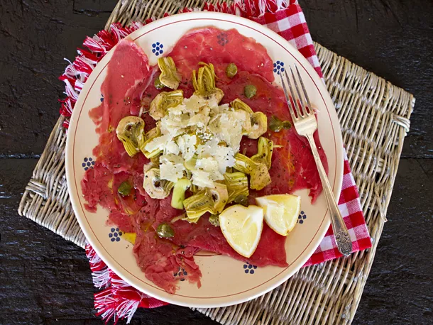

Carpaccio
Ingredients
- 1 pound beef tenderloin
- One 5-ounce box fresh baby arugula, washed and dried
- 1/2 cup extra-virgin olive oil, divided
- Kosher salt and freshly ground black pepper
- 3 tablespoons freshly squeezed juice from about 2 lemons
- 1 teaspoon Dijon mustard
- 1 egg yolk
- 10 small tomatoes cut into quarters to garnish
Steps
- Wrap beef tenderloin in plastic wrap, and chill in freezer for 1 hour. Using a very sharp knife, cut beef across the grain into 1/8-inch-thick slices. Place slices between sheets of plastic wrap or wax paper and gently pound with the flat end of a meat mallet, or roll with a heavy rolling pin until paper-thin.
- Arrange slices on 6 individual chilled plates. Add arugula to a bowl and toss with 4 tablespoons of olive oil and season with salt and pepper. Arrange arugula in a pile in the center of each plate.
- Place remaining 4 tablespoons oil, lemon juice, mustard, egg yolk, salt and pepper in a 2-cup measure. Use an immersion blender or hand blender to mix until thick. Drizzle mustard sauce around each plate avoiding arugula. Garnish plates with tomato quarters and serve immediately.